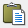
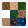
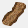

О редакторе
 [t]Редактор карт позволяет создавать полноценные сценарии для игры на любой вкус и цвет, или редактировать уже созданные, включая все стандартные карты, доступные игрокам. Редактор поставляется вместе с игрой и не требует отдельного скачивания и установки.
[t]Редактор карт позволяет создавать полноценные сценарии для игры на любой вкус и цвет, или редактировать уже созданные, включая все стандартные карты, доступные игрокам. Редактор поставляется вместе с игрой и не требует отдельного скачивания и установки.
[t]Редактор предоставляет много возможностей для создания карт, однако эти возможности могут быть расширены за счет дополнительного софта. Его можно найти в соответствующем разделе сайта. Кроме того, Вы можете скачать готовые карты, созданные нами, в следующем разделе.
[t]В этом разделе сайта Вы найдете информацию обо всех кнопках и панелях редактора, их предназначении, приемы создания карт с нуля и до финальных настроек, а также полезные идеи для своих творений. Этот гайд не является единственным верным способом создания карт, но он поможет понять примерную последовательность тем, кто создает сценарий впервые.
[t]Оглавление страницы расположено справа. Ниже представлено окно редактора при первом открытии:
Кнопки и панели редактора
[t]Итак, начнем рассматривать все панели и кнопки по порядку. Помимо основного меню, на панель вынесены кнопки быстрого доступа. Каждая из них дублирует аналогичное действие из меню. Ниже они будут отображены в начале описания каждого из действий:
 [t]1. Вкладка [s]Файл[/s] - Основные действия с файлом:
[t]1. Вкладка [s]Файл[/s] - Основные действия с файлом:
[t] [s]Новый[/s] - Создает шаблон новой карты. Перед созданием указывается версия, размер и наличие подземного мира. Также здесь можно сгенерировать случайную карту ([s]рис. 7[/s]).
[s]Новый[/s] - Создает шаблон новой карты. Перед созданием указывается версия, размер и наличие подземного мира. Также здесь можно сгенерировать случайную карту ([s]рис. 7[/s]).
[t] [s]Открыть[/s] - Открывает директорию, где хранятся все файлы карт, по умолчанию "[s]Папка с игрой/Maps[/s]". Далее можно открыть любой файл карты с расширением [s].h3m[/s].
[s]Открыть[/s] - Открывает директорию, где хранятся все файлы карт, по умолчанию "[s]Папка с игрой/Maps[/s]". Далее можно открыть любой файл карты с расширением [s].h3m[/s].
[t] [s]Сохранить[/s] - Пересохраняет текущую карту. Если шаблон карты до этого не был сохранен, то редактор предложит создать новый файл и назвать его.
[s]Сохранить[/s] - Пересохраняет текущую карту. Если шаблон карты до этого не был сохранен, то редактор предложит создать новый файл и назвать его.
[t]• [s]Сохранить как[/s] - Не пересохраняет исходный файл, а создает новый, которому также нужно присвоить имя.
[t]• [s]Экспортировать текст[/s] - Выгружает файл в формате [s].txt[/s], в котором собрана большая часть текстовой информации, например имя карты, описание, тексты событий, квестов и т.д.
[t]• [s]Импортировать текст[/s] - Совершает действие обратное экспорту - загружает из внешнего текстового файла спецификацию карты.
[t]• Список [s]Недавно открытых файлов[/s] - Отображает 4 последние открытые файла карт, для быстрого доступа к ним.
[t]• [s]Выход[/s] - Закрывает Редактор карт.
 [t]2. Вкладка [s]Редактирование[/s] - Действия с объектами:
[t]2. Вкладка [s]Редактирование[/s] - Действия с объектами:
[t] [s]Отмена[/s] - Отменяет последнее совершенное действие, будь то установка, копирование, удаление объекта или манипуляции с ландшафтом.
[t] [s]Повтор[/s] - Возвращает последнее отмененное действие.
[s]Повтор[/s] - Возвращает последнее отмененное действие.
[t] [s]Вырезать[/s] - Вырезает выделенный объект в буфер обмена.
[s]Вырезать[/s] - Вырезает выделенный объект в буфер обмена.
[t] [s]Копировать[/s] - Помещает выделенный объект в буфер обмена, не удаляя исходник.
[s]Копировать[/s] - Помещает выделенный объект в буфер обмена, не удаляя исходник.
[t] [s]Вставить[/s] - Вставляет объект из буфера обмена в верхний левый угол активного окна редактора.
[t] [s]Удалить[/s] - Удаляет выбранный объект.
[s]Удалить[/s] - Удаляет выбранный объект.
[t]• [s]Найти[/s] - Выводит список всех установленных на карте объектов. Позволяет быстро перемещаться между найденными объектами на карте ([s]рис. 8[/s]).
[t]• [s]Найти следующее[/s] - При выделении объекта позволяет переключиться к следующему объекту того же типа.
[t]• [s]Найти предыдущее[/s] - При выделении объекта позволяет переключиться к предыдущему объекту того же типа.
[t] [s]Свойства[/s] - Показывает свойства выделенного объекта и позволяет их настроить, если это возможно.
 [t]3. Вкладка [s]Просмотр[/s] - Настройка отображения элементов на карте:
[t]3. Вкладка [s]Просмотр[/s] - Настройка отображения элементов на карте:
[t] [s]Ближе[/s] - Увеличивает масштаб активного окна карты. Есть 3 режима масштабирования.
[s]Ближе[/s] - Увеличивает масштаб активного окна карты. Есть 3 режима масштабирования.
[t] [s]Дальше[/s] - Уменьшает масштаб активного окна карты. Есть 3 режима масштабирования.
[s]Дальше[/s] - Уменьшает масштаб активного окна карты. Есть 3 режима масштабирования.
[t] [s]Подземный уровень[/s] - Переключает окно на редактирование [s]Подземного мира[/s]. Повторное нажатие возвращает редактирование [s]Поверхности[/s].
[s]Подземный уровень[/s] - Переключает окно на редактирование [s]Подземного мира[/s]. Повторное нажатие возвращает редактирование [s]Поверхности[/s].
[t] [s]Сетка[/s] - Выводит на экран сетку, которая разделяет каждую клетку карты для удобства редактирования ([s]рис. 9[/s]).
[t] [s]Проходимость[/s] - Выводит на экран маску, которая закрашивает непроходимые участки карты красными квадратами, а клетки для взаимодействия героя - желтыми ([s]рис. 10[/s]).
[s]Проходимость[/s] - Выводит на экран маску, которая закрашивает непроходимые участки карты красными квадратами, а клетки для взаимодействия героя - желтыми ([s]рис. 10[/s]).
[t]• [s]Анимация объектов[/s] - Включает или выключает анимацию у объектов на карте, как если бы карта была открыта в игре.
[t]• [s]Анимация рельефа[/s] - Включает или выключает анимацию рельефа, например волны на воде или потоки лавы.
[t]• [s]Панель инструментов[/s] - Переключает отображение панели инструментов, которая дублирует часть вышеупомянутых действий в виде кнопок для быстрого доступа.
[t]• [s]Панель режима[/s] - Переключает отображение кнопок, открывающих список тех или иных объектов в правой части экрана.
[t]• [s]Панель статуса[/s] - Переключает отображение поля информации в нижней части экрана. В этом поле прописан выбранный объект, активный игрок и размер карты.
[t]4. Вкладка [s]Инструменты[/s] - Переключение между окнами объектов разных типов:
[t] [s]Местность[/s] - Выпадающее подменю делится на две части: В первой выбирается размер кисти, а во второй тип почвы для размещения на карте.
[t] [s]Реки[/s] - Включает режим создания рек определенного типа с кистью 1х1. Либо позволяет стирать реки с карты.
[t] [s]Дороги[/s] - Включает режим создания дорог определенного типа с кистью 1х1. Либо позволяет стирать дороги с карты.
[t] [s]Стереть[/s] - Включает кисть выбранного размера, которые позволяет стирать объекты, дороги и реки с карты, но ничего не делает с почвой.
[s]Стереть[/s] - Включает кисть выбранного размера, которые позволяет стирать объекты, дороги и реки с карты, но ничего не делает с почвой.
[t] [s]Препятствия[/s] - Включает кисть для создания случайных декоративных объектов в выбранной зоне. Сначала на карте синей маской отмечаются места, где нужно сгенерировать препятствия, затем после нажатия кнопки "[s]Разместить препятствия[/s]", они генерируются в зависимости от почвы под ними.
[s]Препятствия[/s] - Включает кисть для создания случайных декоративных объектов в выбранной зоне. Сначала на карте синей маской отмечаются места, где нужно сгенерировать препятствия, затем после нажатия кнопки "[s]Разместить препятствия[/s]", они генерируются в зависимости от почвы под ними.
[t] [s]Объекты[/s] - Позволяет переключаться между списками объектами разных типов, например сокровища, артефакты, герои и т.д. для дальнейшего их размещения на карте.
[s]Объекты[/s] - Позволяет переключаться между списками объектами разных типов, например сокровища, артефакты, герои и т.д. для дальнейшего их размещения на карте.
[t]• [s]Спецификации карты[/s] - Открывает окно продвинутых настроек карты, например ее описание, название в игре, особенности игроков и многое другое.
[t]• [s]Проверить карту[/s] - Выдает список недочетов и ошибок по карте, которые мог не заметить автор при создании или сделал их намеренно, например он показывает объекты, к которым нет доступа или указывает на остуствие описания и имени карты.
[t]• [s]Опции[/s] - Открывает окно со следующими настройками: Частота декоративных объектов при генерации карты, например трещины в земле или реки лавы; Включение или отключение автосохранения карты через определнный промежуток времени; Количество колонок в списке объектов.
[t]5. Вкладка [s]Игрок[/s] - Переключает активного игрока. Если выбран игрок, то все захватываемые объекты станут принадлежать этому игроку. Если хоть один объект на карте принадлежит игроку, то этот игрок автоматически становится активным и участвует в игре.
[t]6. Вкладка [s]Справка[/s] - Раздел помощи при работе с редактором:
[t]• [s]Разделы помощи[/s] - Переключает на веб страницу, где расположены советы по редактору карт (не работает в HotA).
[t]• [s]О редакторе карт[/s] - Показывает название программы, версию и информацию о правах.
[t]Некоторые действия можно совершать при помощи горячих клавиш, например сохранение, копирование или вставку. Эти комбинации клавиш написаны напротив соответствующих действий в основном меню.
[t]Сверху и слева от окна просмотра редактора расположены [s]Линейки[/s] ([s]рис. 11[/s]), единицой измерения в них является одна игровая клетка. Ориентируясь по ним, можно найти центр карты, а также легко сопоставлять объекты в [s]Подземелье[/s] и на [s]Поверхности[/s]. Черные ячейки линеек показывают, что на их пересечении в данный момент находится курсор.
[t]В правой части редактора располагается [s]Миникарта[/s] ([s]рис. 12[/s]). На ней схематично отображен рельеф текущей карты, препятствия и захватываемые объекты. Пунктирной линией показана область, которая попадает в активное окно и видна в данный момент.
[t]По сути миникарта в игре будет выглядеть точно также, как и в редакторе, только изначально будет скрыта [s]Террой инкогнито[/s]. Когда игрок захватывает объект, то на миникарте он окрашивается в цвет этого игрока. Из-за того, что миникарта имеет фиксированное разрешение, в больших картах очень трудно по ней ориентироваться.
[t]Под миникартой располагается окно [s]Активного инструмента[/s] ([s]рис. 13[/s]). В зависимости от того, какой инструмент выбран в данный момент, вид этого окна будет меняться. Например, если активен [s]Инструмент местности[/s], то в данном окне можно будет выбрать тип создаваемой местности и размер кисти, а если выбран, скажем, инструмент [s]Артефакты[/s], то автору будет предложен список всех доступных в игре [s]Артефактов[/s] для их расположения на карте.
[t]В случае с игровыми объектами, их нельзя просто выбрать из списка и размещать, каждый объект для установки нужно перетащить на карту с зажатой кнопкой мыши.
[t][s]Почва[/s], [s]вода[/s], [s]реки[/s], и [s]дороги[/s] наносятся на карту с помощью кисти, для этого стоит лишь выбрать размер этой кисти и наносить рельеф на карту с помощью [s]ЛКМ[/s].
[t][s]Инструмент препятствий[/s] работает следующим образом: Сначала на карте кистью отмечаются места, где в последующем сгенерируются препятствия в зависимости от почвы под ними. Кисть может быть выбрана [s]Жесткая[/s] или [s]Размытая[/s], первая заполняет препятствиями всю выделенную область, вторая - частично заполняет область по периметру, делая рваный рельеф. Когда Вы используете кисть, карта закрашивается синим цветом, именно в этих местах после нажатия на кнопку [s]Разместить препятствия[/s] появятся случайные декоративные объекты. Кроме обычной кисти можно также использовать выделение для заливки больших площадей.

Работа с почвой и рельефом
[t]Перед тем, как приступать к первым штрихам, стоит определиться со следующими моментами:
[t]1. Решите, какого размера будет карта, если Вы начнете создание, то изменить размер в процессе будет нельзя. Учитывайте, что самые динамичные и интересные карты обычно средних размеров. Исходя из размера будет понятно, какое количество игроков будет целесообразно разместить.
[t]2. Определитесь, каков будет сюжет и ориентированность карты: Если карта предназначена для нескольких игроков или будет возможен выбор, за кого начать, то будет разумно отдать каждому из игроков примерно равное количество территории.
[t]3. При создании новой карты, можно сразу же выключить [s]Подземный[/s] уровень, если Вы не планируете его делать, тогда в игре кнопка переключения [s]Подземелья[/s] и [s]Поверхности[/s] будет неактивна. Это необязательно, так как [s]Подземелье[/s] можно просто оставить пустым.
[t]4. Будет не лишним заранее знать условия победы, так как от этого напрямую будет зависеть расположение тех или иных объектов и их количество.
[t]Итак, мы создали шаблон новой карты  , выбрав ее размер и установив наличие / отсутствие [s]Подземелья[/s]. Для тех, кто не готов особо заморачиваться с созданием карты, есть возможность сгенерировать случайную, а затем просто внести в нее свои коррективы, но в статье будет описан подробный процесс создания.
, выбрав ее размер и установив наличие / отсутствие [s]Подземелья[/s]. Для тех, кто не готов особо заморачиваться с созданием карты, есть возможность сгенерировать случайную, а затем просто внести в нее свои коррективы, но в статье будет описан подробный процесс создания.
 [t]Изначально мы видим карту заданных размеров полностью заполненную [s]Водой[/s], как на самом первом скриншоте. Начнем с создания земли, для этого выберем [s]Инструмент местности[/s] и, задав необходимые параметры кисти, будем рисовать поверх [s]Воды[/s] почву ([s]рис. 14[/s]).
[t]Изначально мы видим карту заданных размеров полностью заполненную [s]Водой[/s], как на самом первом скриншоте. Начнем с создания земли, для этого выберем [s]Инструмент местности[/s] и, задав необходимые параметры кисти, будем рисовать поверх [s]Воды[/s] почву ([s]рис. 14[/s]).
[t]Учитывайте, что по [s]Воде[/s] герои могут перемещаться только на [s]Лодках[/s] или если они имеют специальные заклинания и артефакты. По типу почвы [s]Скала[/s] передвигаться нельзя в принципе никаким доступным способом, по умолчанию таким типом почвы залито все [s]Подземелье[/s]. Вся остальная земля пригодна для передвижения, однако создает штрафы передвижения, которые описаны в этой статье.
[t]Разные типы почвы стыкуются своеобразным способом и между ними прорисовывается полоска [s]Земли[/s] или [s]Песка[/s], а также при соприкосновении участки могут менять свою форму. К тому же нельзя создать отдельный участок земли размером [s]1х1 клетку[/s], кроме краев карты, минимальный размер учатска [s]2х2 клетки[/s].
[t]Если Вы заранее будете устанавливать фиксированные [s]Города[/s] игрокам, есть смысл сделать на их территории [s]Родную землю[/s]. Что это значит и какому [s]Городу[/s] какая почва относится можно прочитать в данной статье.
[t]Когда есть первоначальные черты карты и нарисована почва, нужно определиться с местами старта игроков, чтобы выделить им достаточную территорию в дальнейшем. Чтобы задать игрока, переходим во вкладку [s]Игрок[/s] на панели главного меню и там выбираем любого из восьми. Номера игроков задают порядок хода, чем меньше номер, тем раньше игрок ходит (человек всегда ходит перед ИИ). Каждому номеру игрока соответствует свой цвет.
 [t]Этот пункт скорее относится к главе Размещение объектов, однако стоит выполнить его заранее. Выбрав игрока, перейдем к списку [s]Городов[/s] в окне объектов
[t]Этот пункт скорее относится к главе Размещение объектов, однако стоит выполнить его заранее. Выбрав игрока, перейдем к списку [s]Городов[/s] в окне объектов  , затем перетащим нужный [s]Город[/s] на карту. Здесь есть вариант выбрать конкретный [s]Город[/s] или установить [s]Случайный[/s], во втором случае перед стартом сценария игрок сможет выбрать себе [s]Город[/s] из доступных ([s]рис. 15[/s]).
, затем перетащим нужный [s]Город[/s] на карту. Здесь есть вариант выбрать конкретный [s]Город[/s] или установить [s]Случайный[/s], во втором случае перед стартом сценария игрок сможет выбрать себе [s]Город[/s] из доступных ([s]рис. 15[/s]).
[t]Не стоит размещать игроков слишком близко друг к другу, если конечно это не особая задумка автора, иначе игра закончится толком не начавшись.
[t]Имейте ввиду, что пока выбран активный игрок, все захватываемые объекты, которые Вы разместите, будут принадлежать ему и не будут нейтральными. Вы сразу увидите это на [s]Миникарте[/s], объекты окрасятся в цвет игрока.
[t]В целом почву всегда можно будет заменить в процессе создания карты, даже когда на ней будут размещены объекты, исключением являются [s]Вода[/s] и [s]Скала[/s], если расположить их под наземными объектами, то такие объекты будут уничтожены.
[t]Далее займемся расстановкой препятствий и декоративных объектов. Способов их создания два: Первый - размещать объекты путем перетаскивания из списка; Второй - использовать генератор препятствий  . Второй способ гораздо быстрее и удобнее, но сгенерированные объекты не выглядят так же лаконично, как если бы были устновлены вручную. Если Вы не эстет, то второй способ определенно для Вас.
. Второй способ гораздо быстрее и удобнее, но сгенерированные объекты не выглядят так же лаконично, как если бы были устновлены вручную. Если Вы не эстет, то второй способ определенно для Вас.
 [t]Для каждого типа почвы вынесена отдельная вкладка объектов
[t]Для каждого типа почвы вынесена отдельная вкладка объектов  , которые хорошо стилистически сочетаются с почвой под ними. В нашем примере ([s]рис. 16[/s]) мы расставляем препятствия на [s]Камнях[/s], поэтому логично будет выбрать вкладку [s]Объекты каменистой местности[/s]
, которые хорошо стилистически сочетаются с почвой под ними. В нашем примере ([s]рис. 16[/s]) мы расставляем препятствия на [s]Камнях[/s], поэтому логично будет выбрать вкладку [s]Объекты каменистой местности[/s]  . По сути не имеет значения, какие объекты на какой земле размещать, их можно смешивать как Вам только заблагорассудится, все ограничивается только фантазией автора, кроме того объекты можно ставить как бы внахлест, когда один объект перекрывает другой. Таким образом получаются приятные глазу ландшафты.
. По сути не имеет значения, какие объекты на какой земле размещать, их можно смешивать как Вам только заблагорассудится, все ограничивается только фантазией автора, кроме того объекты можно ставить как бы внахлест, когда один объект перекрывает другой. Таким образом получаются приятные глазу ландшафты.
[t]Не все объекты, предназначенные для суши, могут быть размещены на [s]Воде[/s], ровно как и наоборот, водные объекты не установятся на сушу. На типе почвы [s]Скала[/s] вообще нельзя разместить никакие объекты.
[t]При расстановке препятствий следите за двумя вещами: Необходимо оставлять свободное место для размещения в последствии игровых объектов, впрочем препятствия можно без труда удалить; И оставляйте проходы для героев, иногда можно случайно перекрыть ключевой проход и сделать карту неиграбельной. Если же Вы намеренно делаете замкнутые пространства, то позаботьтесь о наличии [s]Телепортов[/s]. Чтобы проверить проходимость карты, можно воспользоваться инструментом [s]Проходимость[/s]  , он выделит непроходимые участки карты красными клетками.
, он выделит непроходимые участки карты красными клетками.
 [t]Теперь можно немного оживить ландшафт и добавить на него [s]Дороги[/s] и [s]Реки[/s] ([s]рис. 17[/s]). [s]Реки[/s] никак не влияют на игровой процесс, они служат исключительно декорацией, чего не скажешь о [s]Дорогах[/s]. Дороги в игре созданы для снижения штрафа передвижения, подробнее о том какие типы [s]Дорог[/s] и как влияют на очки передвижения можно прочитать в этой статье.
[t]Теперь можно немного оживить ландшафт и добавить на него [s]Дороги[/s] и [s]Реки[/s] ([s]рис. 17[/s]). [s]Реки[/s] никак не влияют на игровой процесс, они служат исключительно декорацией, чего не скажешь о [s]Дорогах[/s]. Дороги в игре созданы для снижения штрафа передвижения, подробнее о том какие типы [s]Дорог[/s] и как влияют на очки передвижения можно прочитать в этой статье.
[t]Поскольку разные типы земли создают разные штрафы передвижения, то с помощью [s]Дорог[/s] можно слегка нивелировать неравные условия разных игроков. Так например, если игрок начинает свою игру на [s]Болоте[/s], то передвижение по нему станет настоящей пыткой, в то время как игрок, стартовавший на [s]Траве[/s], сможет перемещаться почти без штрафов. В таком случае будет целесообразно разместить [s]Мощеную дорогу[/s] на территории [s]Болот[/s], а [s]Грязевую дорогу[/s] на [s]Траве[/s].
[t]Если посмотреть на скриншот, то видно, что [s]Дорога[/s] как бы идет между клетками, а не ровно по их центру, так вот активной частью является клетка над [s]Дорогой[/s] и на ней будет действовать эффект снижения штрафа.
[t]Есть два типа декоративных объектов, которые связываются с [s]Реками[/s] и [s]Дорогами[/s] - это [s]Дельты рек[/s] и [s]Мосты[/s]. Эти объекты не являются препятствиями и по ним можно спокойно перемещаться. С помощью [s]Дельты[/s] можно сделать [s]Реку[/s], красиво впадающую в море, а [s]Мост[/s] можно использовать на пересечении [s]Реки[/s] и [s]Дороги[/s]. Эти объекты находятся в разных вкладках, связанных с типами почвы.
[t]Таким образом мы сделали рельеф карты, оградили территорию для каждого игрока, оставили места для размещения игровых объектов и сокровищ. Есть вариант пойти обратным путем - сначала расставить все необходимые объекты, а затем вокруг них создавать препятствия и декорации. Оба варианта правильные и с чего начать решать только Вам.
Размещение объектов
[t]Все будет, но не сразу.
Настройки карты
[t]Все будет, но не сразу.
Идеи для создания карт
[t]Все будет, но не сразу.